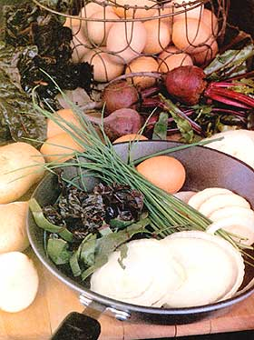
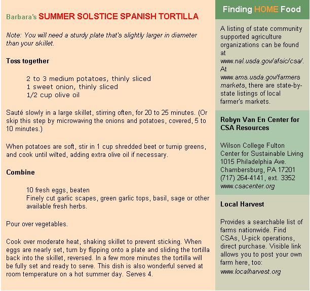

home food: Celebrating the pleasures of local, seasonal eating
A Wallace Stevens poem, called "Sunday Morning," gave me the phrase that perfectly captures how this season affects me. Midpoem, Stevens writes, "Shall she not find in comforts of the sun . . . pungent fruit and bright, green wings" and the "balm and beauty of the earth." More often than I like to admit, I find myself in June sitting in the sunny middle of my clover path idly uprooting grass plants-white clover being the intended crop here-not even pretending to myself that the task is urgent.
Around the solstice my journal is filled with self-congratulatory phrases like, "The garden is close to perfection," or-most recently-"This is peak time in the garden. Everything is planted and looks beautiful. Tomatoes are setting, peppers are growing, onions are bulbing, and there's not even that much to do." After the sometimes frantic spring work of pruning, digging, sowing and planting, these perfectly warm, early summer days seem blessedly becalmed. Comforts of the sun indeed.
And as dawn sweeps away dark with increasing haste each morning, heading toward the longest day of the year, the pleasures of the garden move forward to greet the sun. If gardening at first light is soul medicine, as I find it to be, then picking strawberries at 5 a.m. just past the middle of June serves both industry and spiritual growth. For the compulsives among us, getting such an early start on the day fills us with a sense of moral rectitude, though the real reward is the taste of dewy fruit and visions of strawberry shortcake next winter.
These are the days for inviting friends over-to help refine the garden for summer, of course, but mostly to help use up the contents of the freezer to make room for the new summer's bounty. My habits of preservation always do me in: Howcan I not, I ask myself in October, put up just one more batchof frozen basil pesto cubes, tomato sauce or green beans? Then June comes and I still have bagsful. One of my sons suggested years ago that if we timed it tight, we could end up never having fresh pesto.
Too much of a good thing is a nice problem to have, though. For anyone wanting to take up the challenge of eating locally, this generous summer season is surely the time to start. Who wouldn't want to eat what's local when that includes almost anything you can think of, from sugar snap peas, green onions and radishes to the first beans, beets and zucchini. Strawberries overlap the early rhubarb (for pie!), cherries, raspberries and even the first blueberries. In July, when the nightshades all kick in-offering eggplant and peppers, tomatoes and potatoes-there's almost nothing left to wish for.
Barbara Kingsolver, the only one of my cross-country, advisers who keeps chickens and dairy animals, reminds us the month that brings the solstice is also the high season for eggs: The longer the day the greater the lay. This is also the season for fresh cheeses, because the goats who have birthed their young can spare you some of their milk. Committed though I am to seasonal eating, I was reminded only recently of the seasonality of animals. I had remained unforgivably naive about the real reason for cured meats in winter and our tradition of turkeys at Thanksgiving, when they have had a summer and fall to grow. Warned housing, continuous lighting and artificial insemination have modified the spontaneous seasonality of our livestock just as central heating, polyfleece and transcontinental refrigerated trucking have cut humans off from winter.
In honor of that revived knowledge, perhaps the perfect seasonal dish is a Spanish tortilla with last year's potatoes (or the young ones grabbed from this year's crop), a bunch of beet greens, some fresh herbs and lots of local organic eggs. Since organic poulterers don't use artificial light to force their hens to keep laying, you can boost their income by buying their high-summer egg surplus-and using them in this wonderful dish.
This delicious recipe is Barbara's. Because I've made it, I can rescue anyone who hasn't planned ahead to grow the beet or turnip greens the recipe specifies. The tortilla works fine with a mix of greens: bolting lettuce, chard thinnings, spinach that's sending up those spiky little leaves and incipient flower heads, and even a little young kale, especially if you're growing the beautifully tender red Russian variety. If you want to add an ounce or two of feta cheese to the eggs, as I do, go ahead, but Barbara says you can't call it a Spanish tortilla if you do. The proportions are pretty flexible; add more greens if you like. If you're not good at flipping or aren't feeling particularly adventuresome, you can hold the plate on top of the tortilla while you turn the pan upside down.
Be sure to tell your guests, who will finish off your masterpiece, that everything they've just eaten can be easily grown in any of their back yards or found at their local farmer's market. But be sure to tell them to find a market where vendors farm on land nearby. One Clue: These farmers will not be selling bananas.
|
 RICK WETHERBEE |
 |
|